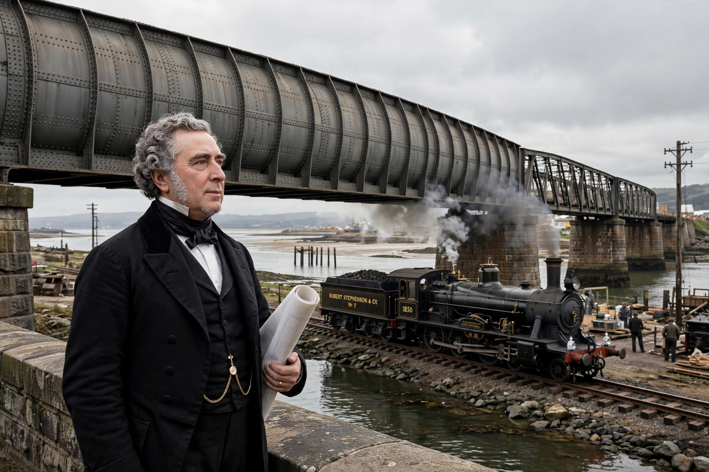

| Born | 16 October 1803, Willington Quay, Northumberland |
|---|---|
| Died | 12 October 1859 (aged 55), London |
| Occupation | Civil and mechanical engineer |
| Parent | George Stephenson |
Robert Stephenson FRS (16 October 1803 – 12 October 1859) was an English civil engineer and designer of locomotives. The only son of George Stephenson, the "Father of Railways," he built on his father's work and was one of the most famous engineers of the Victorian era.
Born at Willington Quay, he was educated in Newcastle and apprenticed in mining engineering. He worked in Colombia on mining ventures before returning to help his father build locomotives at Robert Stephenson and Company in Newcastle — the world's first locomotive works.
Stephenson designed the Rocket's successors, was chief engineer of the London and Birmingham Railway (opened 1838), and designed major bridges including the High Level Bridge at Newcastle, the Britannia Bridge over the Menai Strait, and bridges in Egypt and Canada (Victoria Bridge, Montreal).
He served as MP for Whitby from 1847, declined a knighthood, and was buried in Westminster Abbey. His step-brother and contemporaries included Isambard Kingdom Brunel.